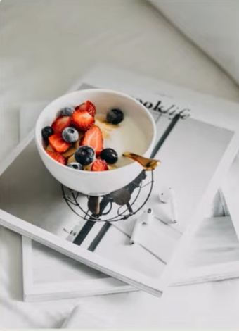
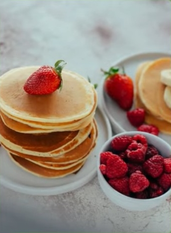
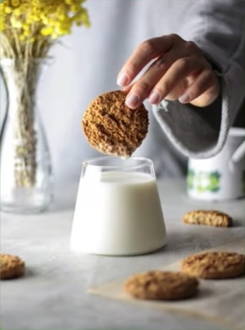
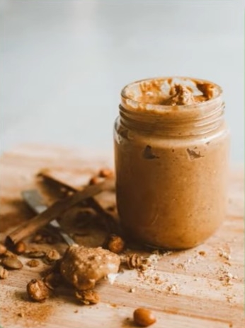
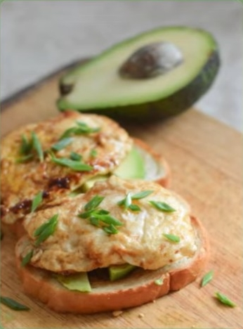
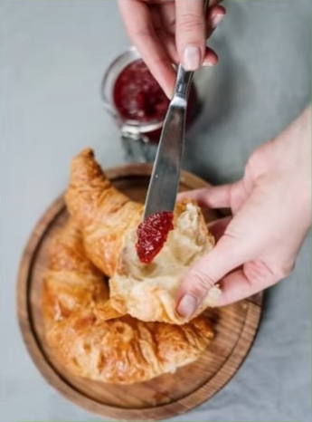
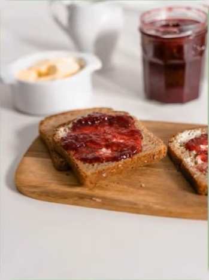
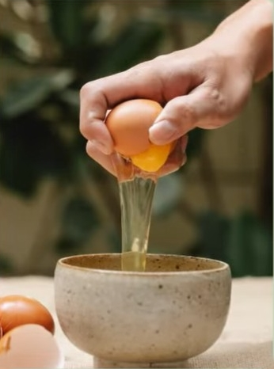

Ce bol sain regorge de fraises et de myrtilles fraîches. C'est le petit-déjeuner idéal, riche en vitamines et naturellement sucré.
Ces crêpes moelleuses garnies de fraises juteuses ont l'air délicieuses. Elles sont sucrées, légères et parfaites pour un matin de détente.
Un biscuit croustillant à l'avoine accompagné d'un verre de lait, c'est simple mais savoureux. Un choix léger et réconfortant pour le petit-déjeuner ou une collation matinale.
Ce beurre de cacahuète crémeux est riche en énergie et en protéines. Tartinez-le sur du pain grillé ou ajoutez-le à vos smoothies pour un apport nutritionnel optimal.
L'avocat et l'œuf sur du pain constituent un petit-déjeuner frais et copieux. Riche en bonnes graisses, il vous rassasiera durablement.
Un croissant à la marmelade est un classique du petit-déjeuner. Moelleux et beurré, il accompagne à merveille une tasse de café ou de thé.
Cette tartine beurrée et confite est simple mais délicieuse. Le mélange sucré-salé est parfait pour bien commencer la journée.
Commencer la journée par une omelette est rassasiant et plein d'énergie. On peut y ajouter des légumes, du fromage ou des herbes pour la rendre encore plus savoureuse.